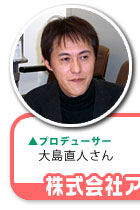
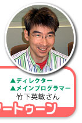
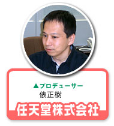
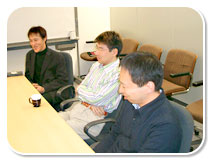
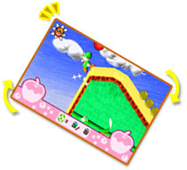
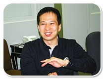
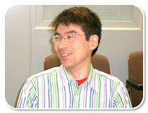
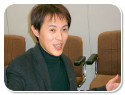
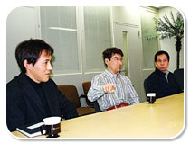

|
トリッキー『ヨッシーの万有引力』を開発したのは、株式会社アートゥーン。ゲーム機本体を傾けて操作するという発想、既存のキャラクターを扱うという葛藤。さまざまな壁を乗り越えて完成へと至るまでは、どんな道のりだったのかを伺ってきました。和やかな空気のなか、どんな楽しいお話が飛び出すかに乞うご期待！
|
|  |
 |
 |
 |
|
|
N.O.M みなさんは今回、どのようなことをなさっているんでしょう？

大島 私はデザイナーとしてこの業界に入り、ディレクターを長くやっていました。で、今回はこれが初プロデュース作品になります。
竹下 私は約10年ほどプログラマーをしていて、アートゥーン立ち上げとほぼ同時に入りました。そこからもプログラマーだったんですが、この作品で初ディレクターをやることになりました。
俵 私は入社４年目頃からセカンドパーティーさんとのコーディネーター…つまり雑用なんですが(笑)それをやっていて。今回が初プロデューサーですね。
N.O.M みなさん初ですか(笑)。今回のソフトを作るにあたってはどんな経緯が？
俵 2003年の夏頃、ヨッシーを使ったゲームの企画を依頼しました。「普通じゃないもの、一言で“こうだ！”と言い表せるものを」と。そうしたら、大島さんが「今度のヨッシーは傾きます！」と言ってきたんです。
大島 チーム内でいろいろとアイディアを出しまして、誰でもわかりやすいものを作りたいと言っていたら、この形になったという感じです。
竹下 従来のゲームでは、“引力”というパラメータは外せない定数でしたよね。地面があって、壁があって、空や天井があって。当たり前ですが壁は坂道にならない。でも今回は、ユーザーが世界そのものを動かして傾けることで、床が坂に、坂が壁に、壁が床に、ということが可能になったんです。上へ向かってジャンプしたら、そのまま下に落ちて来るのが普通ですが、これは傾けてジャンプしたら落下地点が違う。『傾けて、さらに操作する』という新しい要素のアクションゲームになったんです。
大島 うちの会社ではゲームを作る時、いきなり企画書というものを作らないんです。コンセプトシートを作って、ゲームの売りや特徴だけを書く。そしてそれを持って売り込みに行きます。そこからプロトタイプを作って、OKが出たら初めて企画書を作るという方式にしています。体裁ばかり最初に作っても、中身が伴わなかったら意味がないですよね。
俵 そこでまず試作品を作りまして。それが面白かったら、作品として着手しましょうということになったんです。プロトタイプでは、傾きの面白さが出せるかどうかの実験を繰り返していました。
大島 私が「任天堂さんはすごいな」と思ったのは、プロトタイプの合格ラインの水準が高いことです。理論ではなく、とにかく面白さそのものを証明しなくてはいけない。任天堂作品のクオリティの高さって、このボーダー水準の高さだったんだなと驚きました。
俵 やはり面白さの要素がはっきり見えるものでないと、着手できないですから。
大島 そういえば任天堂内のプレゼンテーションで、俵さんが液晶モニターにこれを接続して、モニターごと振ってプレイして見せたと聞いたんですけど？
俵 リハーサルまでやったのに、内部で止められました。残念です…(一同笑)。 |
|
|
|
|
N.O.M ヨッシーの作品を作るにあたって気をつけたことなどは？
竹下 やはりヨッシーのイメージに囚われていて、それを壊しちゃいけないと思っていたんですが、俵さんが「壊しちゃって下さい」と言ってくれて。既存のものをどこまで壊していいのか、その力加減がわかりませんでした。これまで出たヨッシーの作品は全部プレイして、とにかくヨッシーを大切にしたくて。名前を借りるだけではなく、大事なお子さんを預かっているようなものですから(笑)。
俵 最初はタマゴも後ろにゾロゾロと引き連れて歩いていたり。ただ、使わないのに連れて歩いてもね、とか。いろいろと変遷を辿って、おしりから…え〜、空気、そう空気です！ 空気に変更されたり(笑)。
大島 任天堂さんのこだわる部分はすごいと思いますよ。世界観やキャラクターなどを見ていると、一見「かわいい」って感じなんですが、よ〜く見ると「ただかわいいだけじゃないんだ！」というのが本当にわかって。プロの目から見ても、それがわかるんです。
N.O.M "かたむけ"の実装はかなり大変な作業だったと思うんですが。

竹下 本当に大変でした。10年以上プログラマーをやっていますが、イメージと実際のギャップを埋める作業で試行錯誤があって。あまりに煮詰まった時は「わかりました。じゃあ“かたむけ”はやめましょう！ それで全てが解決します！」って冗談で言ったようなことも何度かありました(笑)。
俵 実際、やめれば解決するんですけど…そして全てが無に帰すという(笑)。
竹下 それからよくあったのが、「こういうアイディアがある。でもこれを導入すると、自分の首を絞めることに…どうしよう」みたいなことです。
N.O.M ディレクターとプログラマーを掛け持ちしているからこその苦悩ですよね(笑)。よくディレクターとプログラマーがケンカするというお話を聞きますが、ご自分のなかで折り合いをつけないといけないということですね。
竹下 そうなんですよ。やれば良くなるのはわかってるけど、実際入れると自分が大変。でも良くしたい。でも大変。延々とそんな葛藤があって、バランスを取るように自分のなかで闘っていました。

大島 え!? そうだったの？ 闘っていたというのをいま知った…(笑)。私は傍目から見ていて、「いやあ、なんて生き生きしてるんだろう」って見てたんですけど。でも、人に言われて作業するんじゃなくて、自分で判断して作れるから、そこは楽しかったと思いますよ。竹下のいい所は、他人に言われた意見をちゃんと採り入れて反映させてくれるところなんです。
竹下 全部の夢を叶えたくて、ついやってしまうんですよね。まあ、自分ができなくてもほかのプログラマーに任せればいいかなとか…思ったり…(笑)。
N.O.M 大島さんはプロデューサーとして、どんなアドバイスをされていたんでしょう。
大島 上がってきたものをプレイしたら難しくて、「こんなんできねえよ!!」ということが何度もありました(笑)。
竹下 このゲームは自分たちが世界一上手いじゃないですか、開発してるから(笑)。どっぷり浸かりすぎて、麻痺しているんですよね。大島は違う視点でプレイしていて、どこができないかも言ってくれるし、いろいろなことに気づかせてくれるので大切な意見でした。 |
|
|
|
|
N.O.M １ステージが短くてプレイがしやすいですよね。
大島 これはですね、作っている時にみんなと自分の“短い”の感覚が違っていて。例えばスーパーマリオみたいなアクションゲームの１ステージ分…それの半分程度を指して“短い”と言っていたのかなと思ってました。そしたら全然違って、もっともっと短くて２画面分。誤解してました…。
俵 傾けながらアクションをするというのは、やっぱり短いステージじゃないとテンポよくできませんよね。だからあの短さになったんです。でも、“傾けないとクリアできない”というような、イライラを誘うものは作りたくありませんでした。傾けたらビックリしてさらに楽しくなるよ、傾けると面白いよというものを作りたかったですね。
大島 内容をより良くするために、合宿も何度かやりました。
N.O.M 合宿ですか？
俵 内容を煮詰めたりするのに、夜中までああでもないこうでもない、と遠慮なく話し合いをしました。
竹下 ここまでやってくれる会社は、なかなかないですよ。
俵 合宿ではいい意味でのプレッシャーがありました。シーンの作成で、竹下さんが「つまらないと思ったらすぐダメ出しして下さい」と言ったので、300シーンほど作りましたが、つぎつぎにダメ出しを(笑)。「××」と「×」、ランクがあるんですが、とにかく妥協はしなかったです。年末に照準を合わせるのが大前提だったので、最後の最後、ギリギリまで変えていきました。
N.O.M 終わってみていかがでしょう。
竹下 とにかく終わって良かったなーと…。あ、そうそう、マスターアップ前日辺りなんですが、その日になって初めて４件もフリーズするバグが発見されて。接触不良じゃないか、静電気じゃないかとあれこれ言ってたんですが。
大島 どこで止まるんだろうとプレイしてみるんですけど、そういう時に限って止まらないんですよ〜(笑)。
竹下 結局プログラムミスだったんですが、状況によって出たり出なかったりと発現率の非常に低いバグだったんです。でも本当に、マスターアップ前に表面化して良かったですよ、本当に。
N.O.M では最後に、ユーザーへのメッセージをお願いします。
竹下 “引力”を制御したのは初めてで、エポックメイキングしたなという思いがあります。こんなゲームはほかにないという自信があるので、ぜひ遊んで欲しいです。携帯ゲームならではのいいところが凝縮されていますから。
大島 私は新しい流れの元になれるアクションゲームを作りたかったんですが、そういうものができたと思います。予想よりも本当に素晴らしい出来だと感じていますし。自分は俗に言うプロデューサーではなく、現場に入ってチームと一緒にやっていたので、作業はとても楽しかったです。みなさんがこれを電車のなかで遊んでいる姿を、ぜひ見てみたいと思います（一堂から「それ、見たいな〜」の声）。
俵 アクションゲームは、クリアできないとそこで終わりというものが多いですが、これはクリアできないステージがあっても先へ進めるようになっています。だからいままでアクションに苦手意識を持っていた人、初心者でも行けるはずです。逆に得意な人はメダルのグレードアップを目指して頑張って欲しいです。自分で目標設定して遊べるのが魅力だと思うので、ぜひ買って遊んで下さいね。

N.O.M これからは電車のなかに注目ですね。どうもありがとうございました！ |
|
|
|